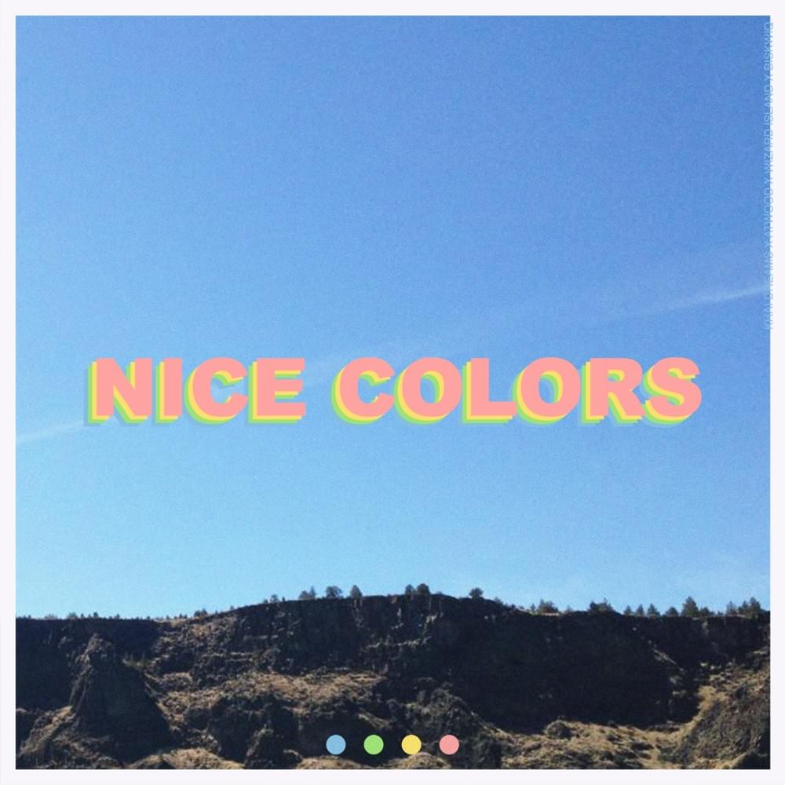

Source
|
When you’re a fresh record label looking to make an immediate impact on the music scene it’s important to deliver a quality tune to start off on the right foot. That’s exactly what Twitch streamer Tucker (Jericho) Boner and Daniel Goudie of Disciple Records have accomplished with their new imprint, NIGHT MODE. Source |
|---|
|  | Nice Colors, a collaborative EP from Khai Dreams and Atwood, is a voyage into the sounds of summer. Warm, catchy vocals and punchy, sparkling production fill the project with positive emotion. Perfect for relaxing in the sun, taking a bike ride, or swimming by the ocean, this tape complements the feelings of summer. Furthermore, Nice Colors marks a milestone in these artists' careers; it will likely be remembered for years to come. Source |
|---|